This page was last modified EST.
Pictures of Ina Jo Mapp
There are pictures from many decades of her life. Click on any picture to see it enlarged.
College annual photo of Ina Jo
A
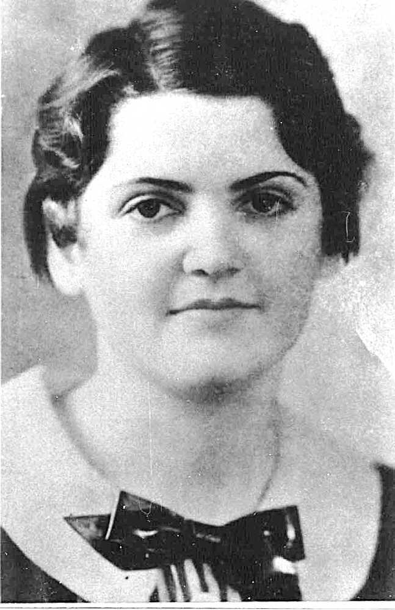
Ina Jo Walton in age range 18-22.
B
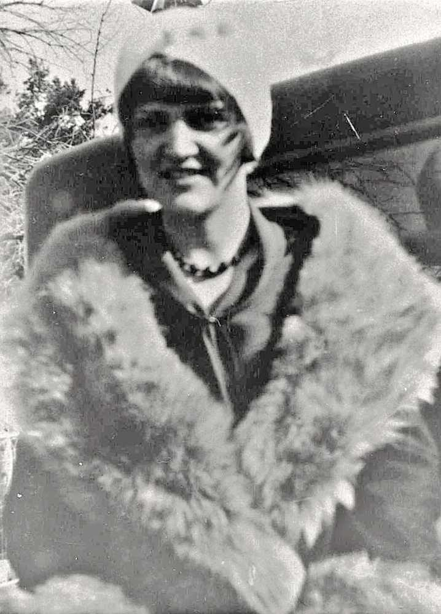
Ina Jow Walton wearing a fur, standing behind a town car.
C
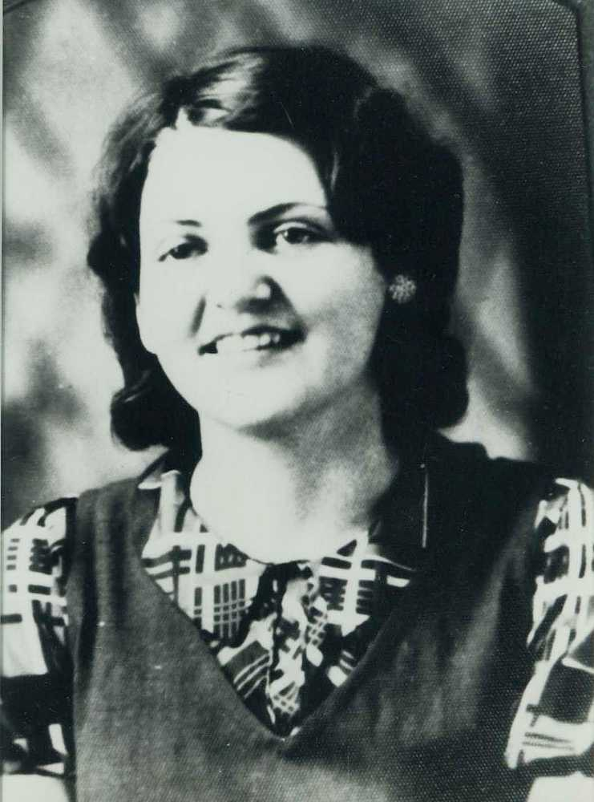
Ina Jo Walton in age range 22-24.
D
Ina Jo Walton in age range 22-24, hair in Betty Boop hair style.
A
 Three Walton sisters: Ina Jo, Annie Joy and Louise.
Three Walton sisters: Ina Jo, Annie Joy and Louise.
B
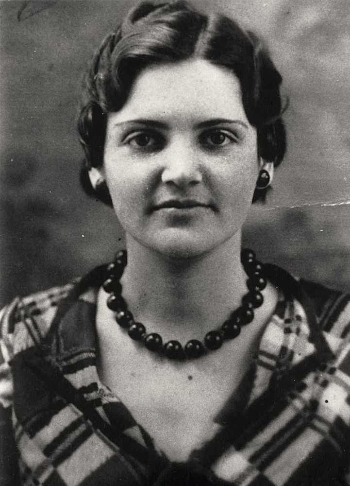
Ina Jo Mapp, The year is about 1935.
C
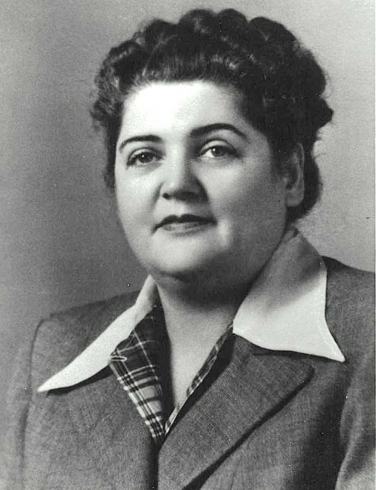
Ina Jo Mapp. The year is about 1948.
D
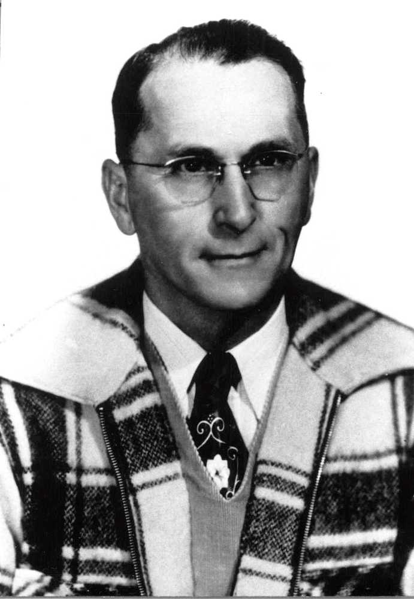
William Ernest Mapp Senior.
A
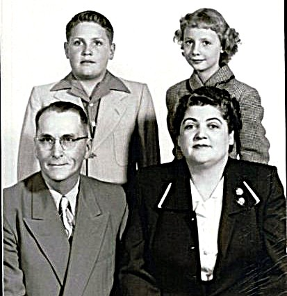
Family portrait. Clockwise from 8 oclock: Ernest, Dick, Mylinda and Ina Jo Mapp.
B
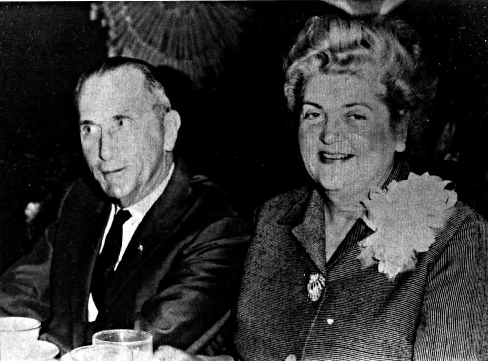
Ernest and Ina Jo Mapp dressed up at a dinner.
C
 Walton sisters Ina Jo (Walton) Mapp and Louise (Walton) Bronstad at 4710 E Loraine..
Walton sisters Ina Jo (Walton) Mapp and Louise (Walton) Bronstad at 4710 E Loraine..
D
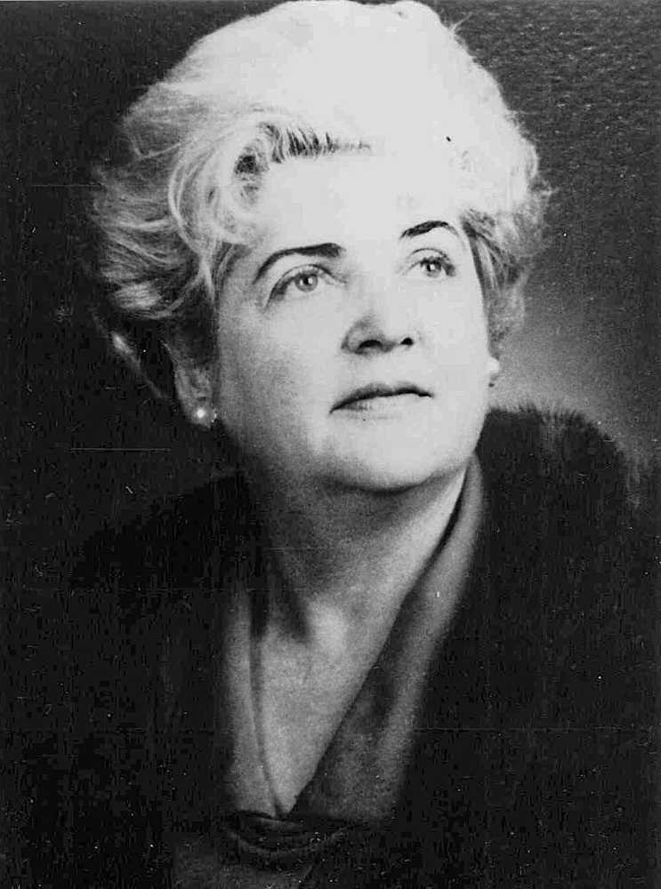
Dramatic portrait of Ina Jo Mapp.
A
 Ina Jo Mapp, probably in her 31st street home in Odessa, TX.
Ina Jo Mapp, probably in her 31st street home in Odessa, TX.
B
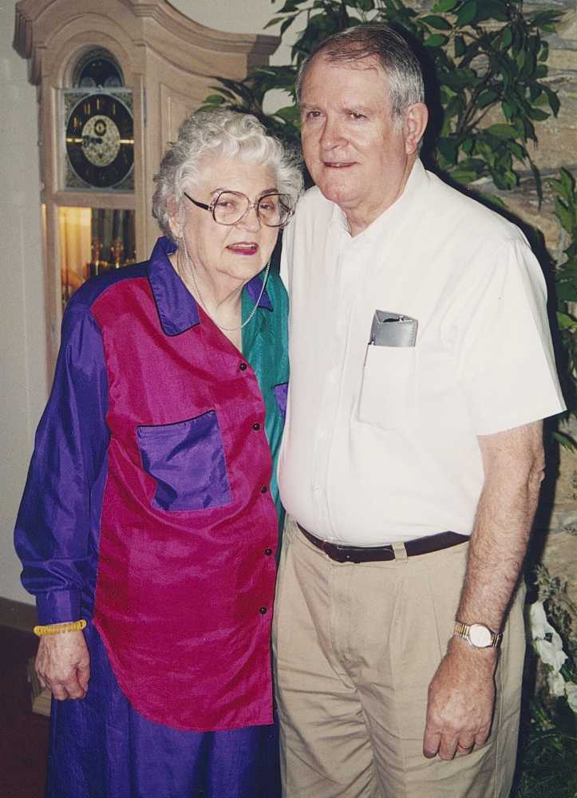
Nephew Bob Holbrook visits Ina Jo Mapp at an assisted living facility .
C
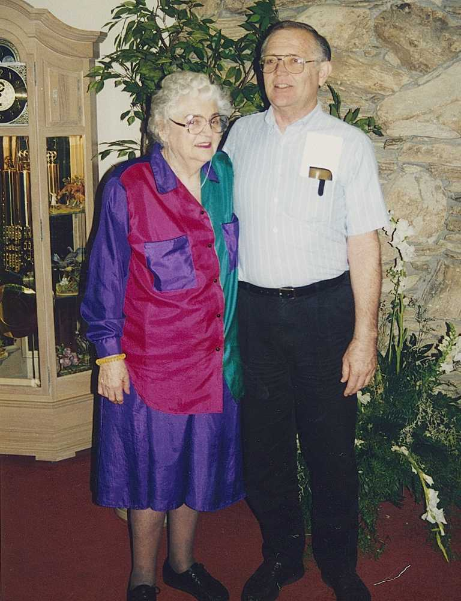
Nephew Walt Bronstad visits Ina Jo Mapp at an assisted living facility.
D
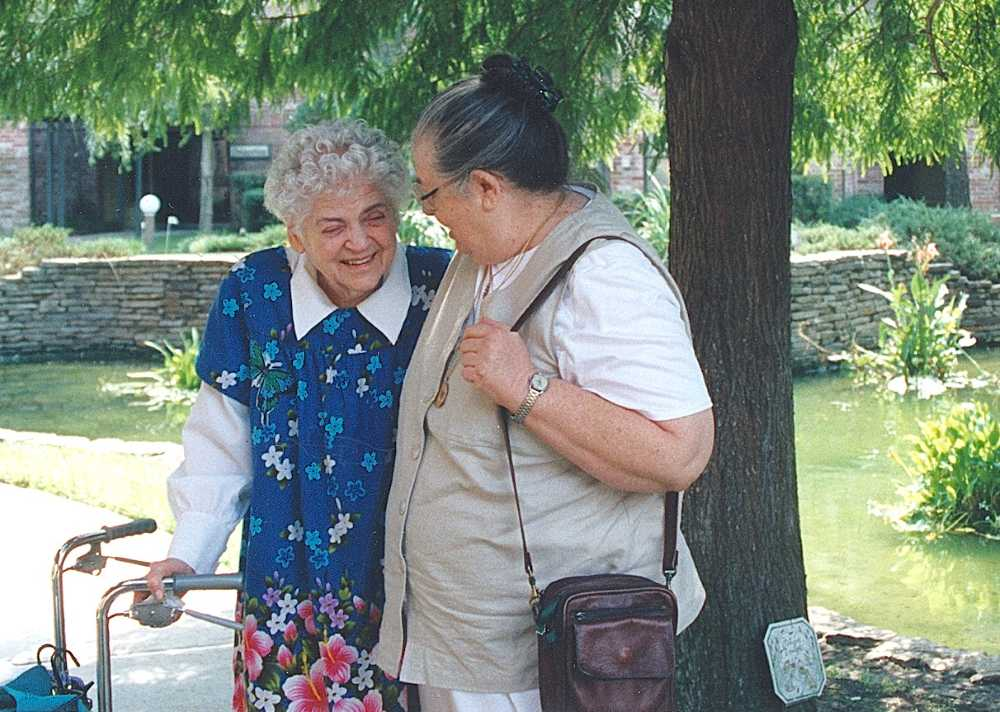
Niece Nan (Walton) Bland visits Ina Jo Mapp at an assisted living facility.
A
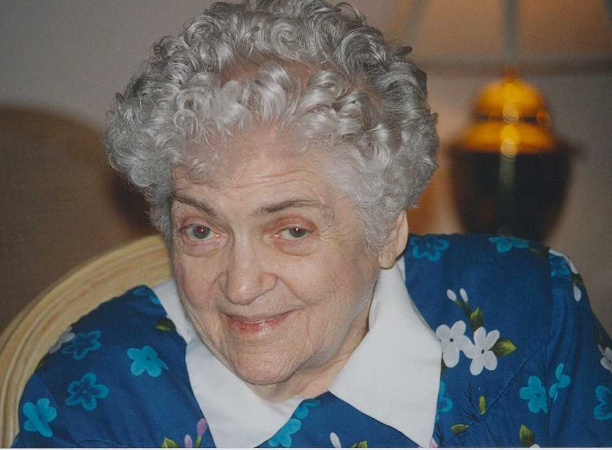
Ina Jo was frequently amused, she listens in anticipation, near mirth.
B
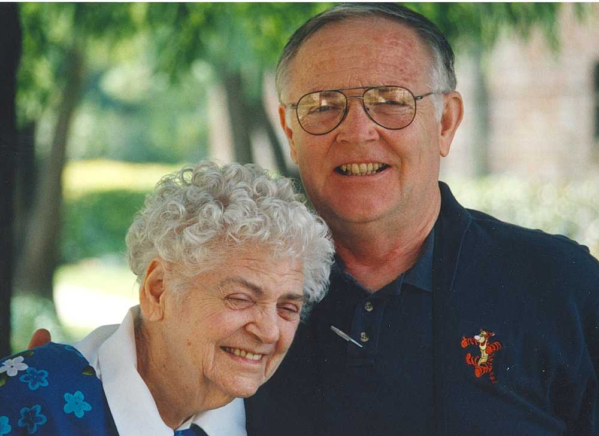
Nephew Walt Bronstad visits Ina Jo Mapp at an assisted living facility.
C
 Four.
Four.
D